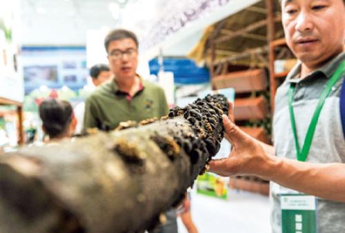

◇有了绿水青山，不愁金山银山。伊春正转变靠山吃山“吃法”，变“采山”为“种山”，
将生态优势转化为绿色生产力，成长为产业优势、经济优势和竞争优势
◇在守护绿水青山面前，伊春人不做选择题，再难也只做必答题，以护林为傲，伊春人守护着小兴安岭每一棵树，守护好祖国北疆的生态屏障
◇全面停伐后，人往哪里去是民生大课题。伊春打出“三转一托底”的组合拳，走出了一条“养林”与“养人”的双赢之路
林区经济转型发展怎么样？林区生态保护怎么样？林场职工生活怎么样？ 2016年，习近平总书记在黑龙江省伊春市考察调研时提出了“林区三问”。三年来，地处巍巍小兴安岭的“林都”伊春牢记嘱托、砥砺前行，交出了一份镌刻生态印记的答卷。 三年来，作为我国北方最重要的生态安全屏障，小兴安岭森林蓄积量年均净增1000万立方米，森林覆被率提高0.3个百分点，祖国北疆“祖母绿”碧色更浓。 三年来，作为我国开发最早，也是停伐最早的重点国有林区，老森林工业基地伊春市经济增长由负转正，渡过停伐阵痛，正奋力涅槃重生。 三年来，作为一座因林而生、因林而兴、因林而衰、因林而转的城市的主人，林业工人生活进一步改善，7万多名林业富余职工安置率达99.6%。 让老林区焕发青春活力！伊春以习近平总书记的嘱托为统领，走出了一条生态立市、旅游强市、依生态转型、靠生态富民的绿色高质量发展之路。 伊春、伊春，柳暗花明又一春；伊春，依然青春。

问：林区经济转型发展怎么样
答：绿色生产力打造生态金饭碗,从蓝莓果干，到蓝莓白兰地、花青素；
从普通干木耳，到绒饮等系列木耳食品；从松树明子木雕，到如今叫响全国的北沉香……
三年前，习近平总书记到伊春市调研，首站就来到伊春经济技术开发区展示厅。三年间，
这里的展品不断由“原字号”向“新字号”迭代升级，产业链越拉越长，科技含量、品牌分量不
断提升，涵盖了森林食品、北药、北沉香等八大类380余个品种。
问：林区生态保护怎么样
答：筑牢十四亿人的北疆生态屏障
一系列生态保护的“伊春标准”，让小兴安岭休养生息取得历史性跨越。记者从伊春市林业和
草原局了解到，近三年来，伊春市抚育中幼林860万亩，活立木总蓄积达到3.48亿立方米，森
林蓄积量年均净增1000万立方米以上。1000万立方米木材意味着什么？伊春市林草局调研员
付鹏说，一节火车车皮能装50立方米，这相当于每年新增20万个车皮的木材。伊春市委书记
赵万山说，小兴安岭每一棵树，不仅属于伊春，更属于全国人民。117万伊春人民要当好护林
人，守护好祖国北疆的生态屏障。
问：林场职工生活怎么样
答：幸福像兴安岭的绿色一样绵长
“3年前做梦也不敢想能过上这样的日子呀。”原伊春市上甘岭林业局溪水经营所退休林业工
人刘养顺说起变化，乐得合不拢嘴。